Setting column and row sizes correctly
There are four different types of sizes you can give rows and columns.
Fixed
Fixed(scene_units) is used to set a column or row to an absolute size, independent of its content. This only really makes sense if there is variable width content in the column or row, that can shrink or expand to meet this size. You will probably not need Fixed sizes very often.
using MakieLayout
using AbstractPlotting
scene, layout = layoutscene(resolution = (1200, 900))
layout[1, 1] = LAxis(scene, title = "My column has size Fixed(400)")
layout[1, 2] = LAxis(scene, title = "My column has size Auto()")
colsize!(layout, 1, Fixed(400))
# colsize!(layout, 1, 400) would also work
scene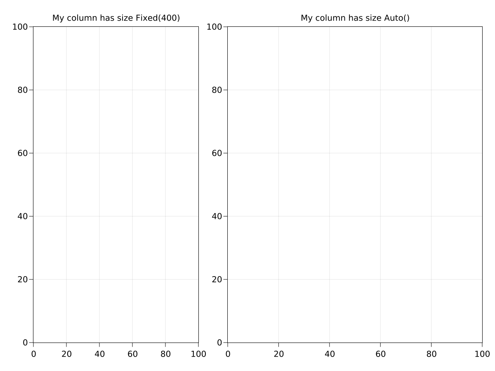
Relative
Relative(fraction) is used to set a column or row to a size that is a certain fraction of the available width or height. This is useful, e.g., if you want a column to span 50% of the available width, no matter what other content is there. In this case, you would use Relative(1/2). The available width is the width of the GridLayout minus the space taken by row or column gaps including protrusions.
using MakieLayout
using AbstractPlotting
scene, layout = layoutscene(resolution = (1200, 900))
layout[1, 1] = LAxis(scene, title = "My column has size Relative(2/3)")
layout[1, 2] = LAxis(scene, title = "My column has size Auto()")
layout[1, 3] = LColorbar(scene, width = 30)
colsize!(layout, 1, Relative(2/3))
scene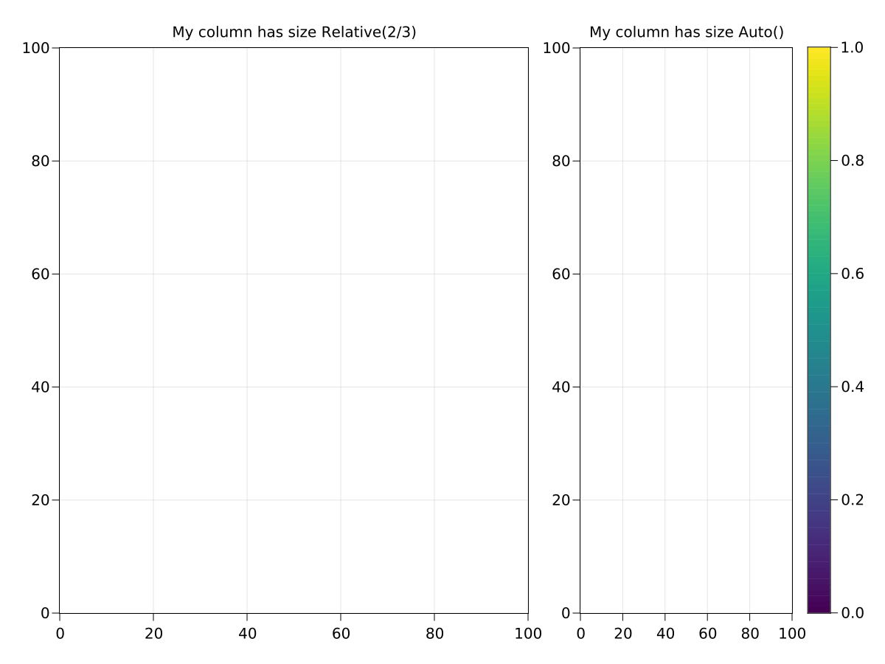
Auto
The Auto size is a bit more complex to understand. It has two parameters, the Boolean trydetermine and the number ratio. The default is Auto() == Auto(true, 1). This is also the default row height and column width.
A column or row that is sized Auto(true) tries to fit its own size to its content.
When a GridLayout is solved, it looks at the content in each row or column and checks if it reports a fixed size. Many objects can report their own width or height because their content has a specific size, such as LText. Other objects are often used with a user-set width or height, for example LColorbar(scene, width = 30). In this case, the GridLayout can also see that the colorbar has a width of 30 units and fit the column width to that value. Objects like LAxis on the other hand are usually not set to a specific size.
Only objects that span a single row or column report their width or height, respectively. If multiple rows or columns are spanned, it's not well defined how the space that the object needs should be distributed.
If there is more than one object with a fixed width or height in an Auto(true) sized column, the maximum size is used.
If a column or row is sized Auto(false), fixed-size objects are ignored. It can also happen of course, that there is no fixed-size object in a row or column with Auto(true) size. In both these cases, columns or rows determine their size by what remains after all Fixed, Relative, Aspect and size-inferred Auto(true) columns or rows have been calculated. Each undetermined Auto column gets a share of the remaining space that is proportional to its ratio parameter.
For example, let's say there are two columns left with undetermined Auto size when 300 units space remain. Column 1 has ratio 1 while column 2 has ratio 2. The first column will get 1 / (1 + 2) * 300 == 100 units, while the second column gets 2 / (1 + 2) * 300 == 200 units.
using MakieLayout
using AbstractPlotting
scene, layout = layoutscene(resolution = (1200, 900))
layout[1, 1] = LAxis(scene, title = "My column infers my width\nof 200 units")
layout[1, 2] = LAxis(scene, title = "My column gets 1/3rd\nof the remaining space")
layout[1, 3] = LAxis(scene, title = "My column gets 2/3rds\nof the remaining space")
colsize!(layout, 2, Auto(1)) # equivalent to Auto(true, 1)
colsize!(layout, 3, Auto(2)) # equivalent to Auto(true, 2)
scene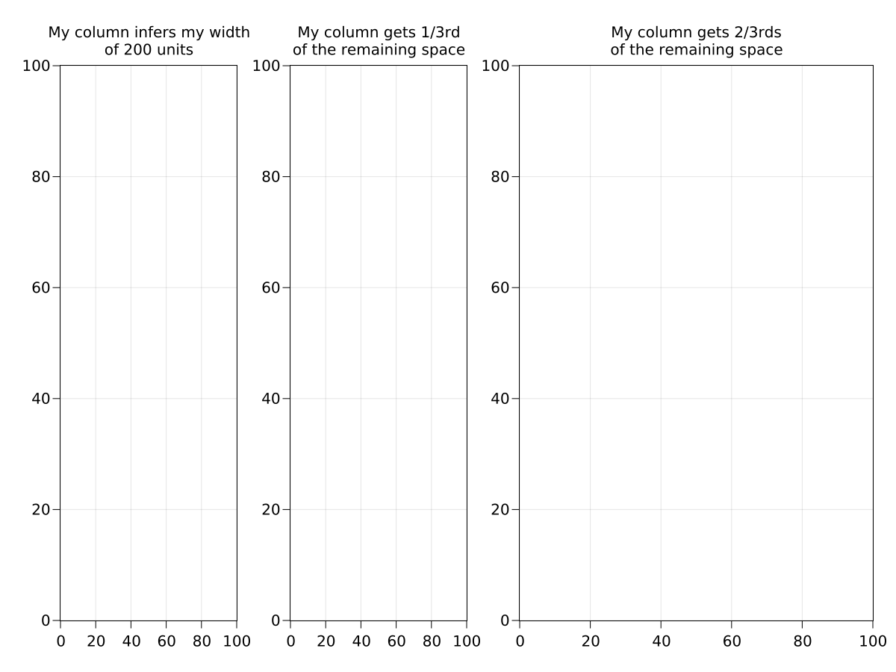
Aspect
This size is also a little bit trickier to understand. The syntax is Aspect(reference, ratio). A column with a width of Aspect(1, 2.0) is set to 2.0 times the height of row 1, no matter what that height is. Therefore, the grid cell at [1, 1] will always have an aspect ratio of 2 to 1. The opposite pattern applies to rows with Aspect size.
Aspect sized columns or rows are very useful when you want to constrain the aspect ratio of a grid cell. For example, a plot that is always supposed to be square. Enforcing the aspect on the layout level is better than setting axis.aspect = AxisAspect(1) in most cases, because it ensures an intact layout where all grid cell borders are aligned visually. An LAxis with aspect = AxisAspect(1) on the other hand simply shrinks so it remains square, but this will break alignment with other grid content.
using MakieLayout
using AbstractPlotting
scene, layout = layoutscene(resolution = (1200, 900))
layout[1, 1] = LAxis(scene, title = "I'm square and aligned")
layout[1, 2] = LRect(scene, color = (:blue, 0.1), strokecolor = :transparent)
layout[1, 2] = LAxis(scene, aspect = AxisAspect(1),
title = "I'm square but break the layout.\nMy actual cell is the blue rect.")
layout[2, 1] = LAxis(scene)
layout[2, 2] = LAxis(scene)
rowsize!(layout, 2, Relative(2/3))
colsize!(layout, 1, Aspect(1, 1))
scene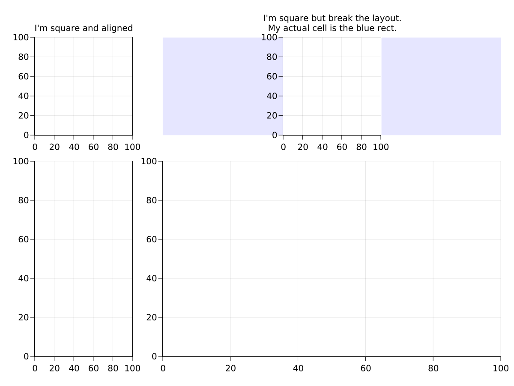
Keep in mind that if you set too many constraints on row and column sizes, a GridLayout can easily be too big or too small. It's good to have variable-width elements to fill the remaining space if you use an element with fixed size or fixed aspect ratio.
Nesting
Grids can be nested inside other grids, and so on, to arbitrary depths. The top grid's parent should be the scene in which the layout is placed. When you place a grid inside another grid, that grid is automatically made its parent. Grids also are by default set to alignmode Inside which means that the content edges are aligned to the grid's bounding box, excluding the outer protrusions. This way, plots in nested grids are nicely aligned along their spines.
using MakieLayout
using AbstractPlotting
scene, layout = layoutscene(30, resolution = (1200, 900))
subgl_left = GridLayout()
subgl_left[1:2, 1:2] = [LAxis(scene) for i in 1:2, j in 1:2]
subgl_right = GridLayout()
subgl_right[1:3, 1] = [LAxis(scene) for i in 1:3]
layout[1, 1] = subgl_left
layout[1, 2] = subgl_right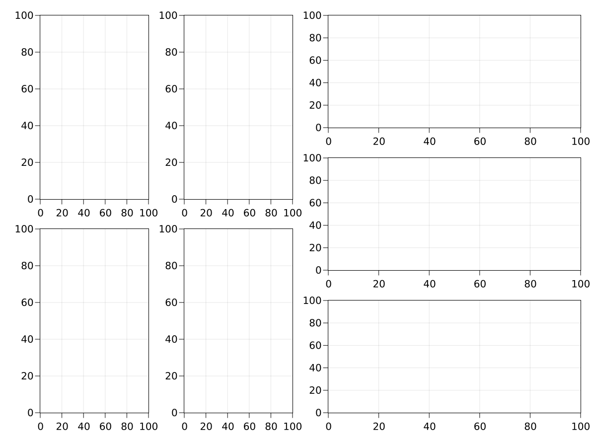
Alignment
Here you can see the difference between the align modes Outside with and without margins and the Inside alignmode. Only the standard Inside mode aligns the axis spines of the contained axes nicely. The Outside mode is mostly useful for the main GridLayout so that there some space between the window edges and the plots. You can see that the normal axis looks the same as the one placed inside the grid with Inside alignment, and they are both effectively aligned exactly the same.
using MakieLayout
using AbstractPlotting
scene, layout = layoutscene(resolution = (1200, 1200))
layout[1, 1] = LAxis(scene, title="No grid layout")
layout[2, 1] = LAxis(scene, title="No grid layout")
layout[3, 1] = LAxis(scene, title="No grid layout")
subgl_1 = layout[1, 2] = GridLayout(alignmode=Inside())
subgl_2 = layout[2, 2] = GridLayout(alignmode=Outside())
subgl_3 = layout[3, 2] = GridLayout(alignmode=Outside(50))
subgl_1[1, 1] = LAxis(scene, title="Inside")
subgl_2[1, 1] = LAxis(scene, title="Outside")
subgl_3[1, 1] = LAxis(scene, title="Outside(50)")
layout[1:3, 2] = [LRect(scene, color = :transparent, strokecolor = :red) for i in 1:3]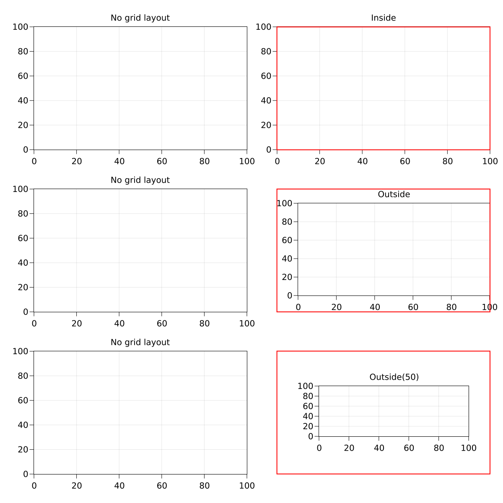
Spanned Placement
Elements in a grid layout can span multiple rows and columns. You can specify them with the range syntax and colons for the full width or height. You can also use end to specify the last row or column.
using MakieLayout
using AbstractPlotting
scene, layout = layoutscene(4, 4, resolution = (1200, 1200))
layout[1, 1:2] = LAxis(scene, title="[1, 1:2]")
layout[2:4, 1:2] = LAxis(scene, title="[2:4, 1:2]")
layout[:, 3] = LAxis(scene, title="[:, 3]")
layout[1:3, end] = LAxis(scene, title="[1:3, end]")
layout[end, end] = LAxis(scene, title="[end, end]")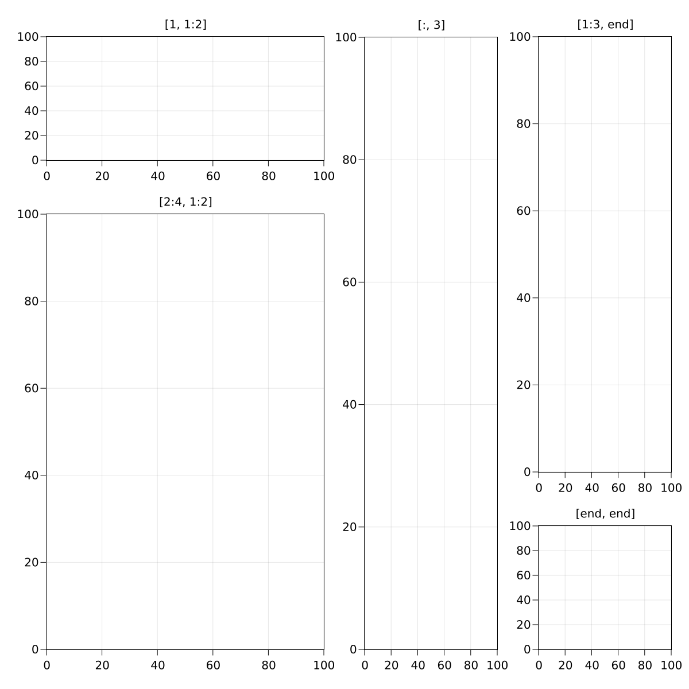
Adding rows and columns by indexing
If you index outside of the current range of a grid layout, you do not get an error. Instead, the layout automatically resizes to contain the new indices. This is very useful if you want to iteratively build a layout, or add super or side titles.
using MakieLayout
using AbstractPlotting
scene, layout = layoutscene(resolution = (1200, 1200))
layout[1, 1] = LAxis(scene)
for i in 1:3
layout[:, end+1] = LAxis(scene)
layout[end+1, :] = LAxis(scene)
end
layout[0, :] = LText(scene, text="Super Title", textsize=50)
layout[end+1, :] = LText(scene, text="Sub Title", textsize=50)
layout[2:end-1, 0] = LText(scene, text="Left Text", textsize=50,
rotation=pi/2)
layout[2:end-1, end+1] = LText(scene, text="Right Text", textsize=50,
rotation=-pi/2)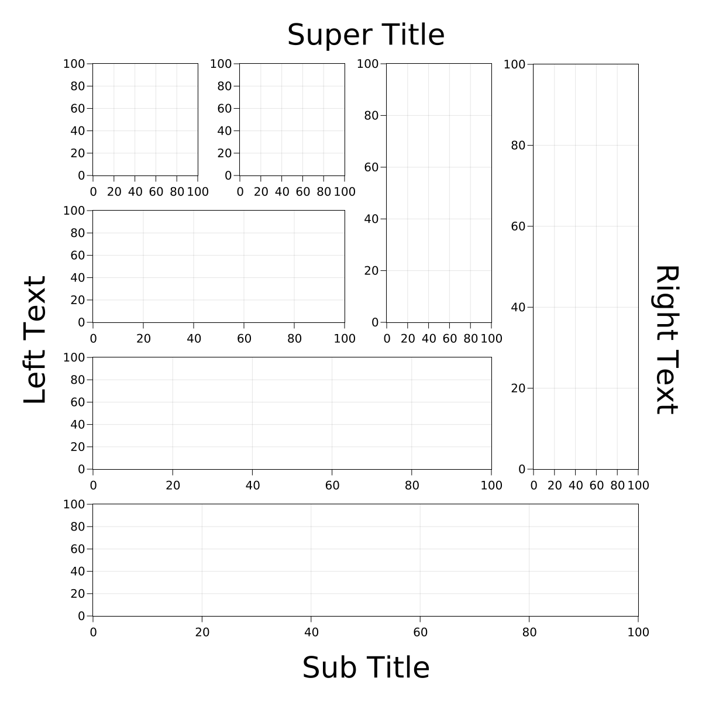
Trimming empty rows and columns
If you change a layout interactively and end up with unused rows or columns, trim! will remove those for you.
Here we start with two axes:
using MakieLayout
using AbstractPlotting
scene, layout = layoutscene(resolution = (1200, 900))
ax1 = layout[1, 1] = LAxis(scene, title = "Axis 1")
ax2 = layout[1, 2] = LAxis(scene, title = "Axis 2")
scene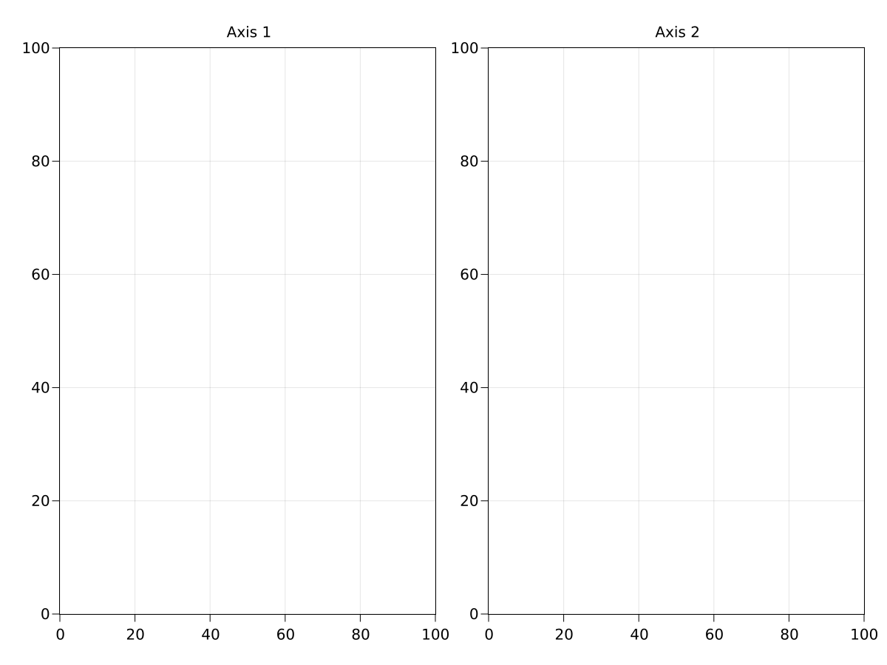
Now we decide we'd like the second axis better if it was below the first one. We move it two the new cell, and the old unused column is left blank.
layout[2, 1] = ax2
scene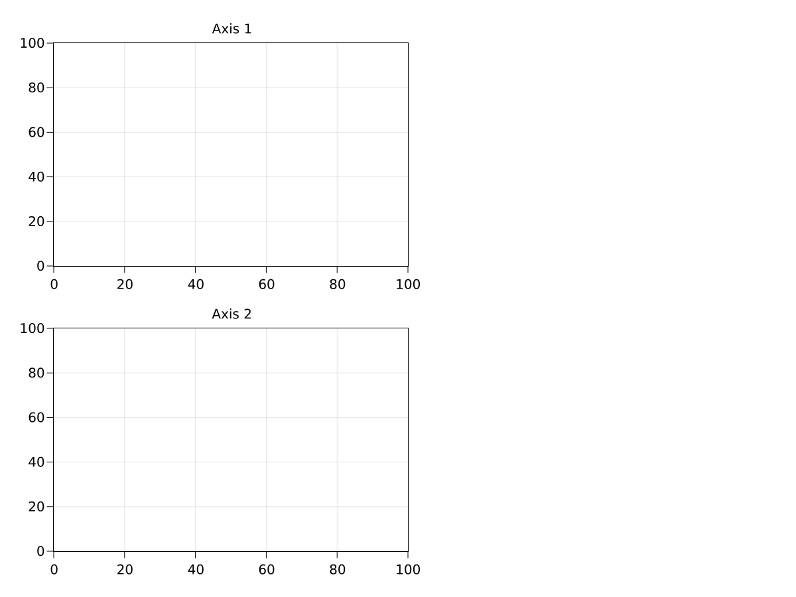
We can get rid of the unused space with trim!:
trim!(layout)
scene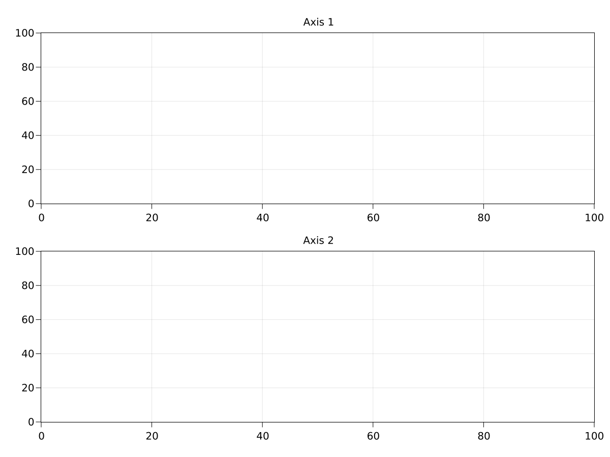